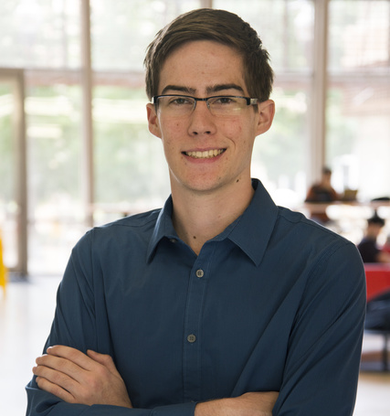

|

|
I recently graduated from the Turing Scholar Honors Program at the University of Texas at Austin with a BS in Computer Science. I am currently a Software Engineer at Dropbox in San Francisco, California. At the end of my senior year of college, I wrote an honors thesis on " Communicating Replicated State Machines". I enjoy building systems and websites that solve problems in people's everyday lives. As a software engineering intern, I have worked at Dropbox, Google, and Indeed. When I'm not programming, I enjoy rock climbing, running, playing video games, and playing ultimate frisbee. Check out my projects to see some of my work or check them out on my GitHub. If you want to get in touch with me, email me at david (dot) wetterau @ gmail.com or find me on LinkedIn. |